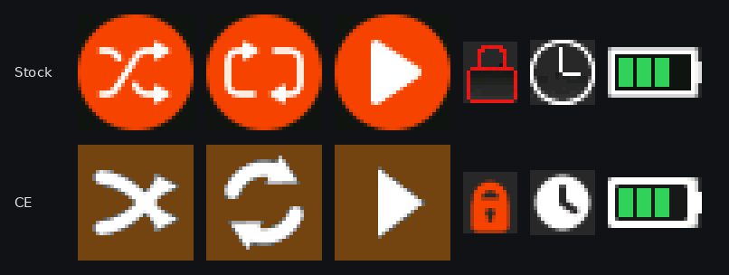

Album-derived backgrounds
Theater mode derives the playback background from the album art. Tracks without art use the theme default; transport glyphs sit directly over the background.
Better Vorbis decoding, faster track changes, natural sorting, Opus, playlists and a refreshed look for the DAP Neo. Pick an image, put it on the player from this page, and run the update on the device.
Not yet tested on hardware. No CE image has been installed on a device; every check so far is offline (emulation, host tests, image validation). You would be the first hardware test. Back up your music and read Going back to stock first. If the player stops booting, recovery needs the Rockchip USB (Rockusb) tools.
If the player still boots and can run an update, install Back to stock the same way. It is stock code dated one day after CE, so the player prefers it. Plain stock DP3_V137.img is older than CE and the player would keep booting CE. If the player does not boot, recovery needs the Rockchip USB (Rockusb) tools; see release/README.md in the repository.
Connect the player to this computer with USB so its storage shows up as a drive.
sha256sum -c SHA256SUMS. Never install an image whose hash does not match.RKNANOFWIMG, with no dot and no extension.RKNANOFWIMG. A leftover update file can run the installer again..m3u playlist, the hold switch and a long press of Power.The stock installer writes both firmware slots, so no stock copy stays on the player after an install. Please report results, good or bad, as a GitHub issue with the image hash and what you tested.
DP3_V137.img; everything runs in this page and nothing is uploaded.Colors reach the firmware only through the exact resource rules in section 3. The screens in section 2 show real firmware pixels, not this palette.
The downloaded JSON is an input to patches/framework/build.py --theme-config theme.json, or to the builder in section 4 below. No flashing occurs here.
The screens in section 2 use real resource pixels and replay the player's own drawing of the status icon and transport row; the cover, text and progress bar there are approximations. Black and 0x00F8 are blocked as possible transparency/key colors. Every resource patch pins its original RGB565 word and pixel count. The theme export on its own does not modify a binary; the builder in section 4 applies the same patches and finalisation as the Python framework, in this page and locally, and an offline test in the repository (tests/builder.test.mjs) checks its output byte for byte against the framework's.
Real firmware pixels: every icon and background is decoded from the stock image and the CE standard image, and the status icon and transport row are drawn exactly as each image's player code draws them (recorded under emulation and checked word for word). The cover, title, artist, times and progress bar are drawn by this page at approximate positions in an approximate font.
An overlaid resource is drawn at its stored x/y, with every pixel opaque.
Load the original firmware to examine its resource table. Select an asset, choose a source RGB565 color and assign a theme role. No global color search-and-replace.
Choose the firmware file to load the resource catalog.
No resource changes selected.
Everything below runs in this page, from the stock image in section 1: no scripts, no uploads. Every patch checks its expected bytes, every payload its pinned SHA-256, and the result gets the 2026-10-23 header date and a recomputed checksum. Built in emulation only; nothing has been tested on a device.
The CS43198 has five interpolation filters. Stock code can select each of them but no menu offers the choice, so every unit uses the first. Linear phase delays the signal about 0.9 ms at 44.1 kHz, against 0.14 ms for low latency. Slow roll-off starts falling at 18.4 kHz instead of 20 kHz and rejects 64 dB above the band instead of 110. NOS has almost no delay but is up to 3.2 dB down at 20 kHz and has no interpolation filter to remove images above the band. None of these is claimed to sound better.
Give any of the six presets your own curve: paste an AutoEQ GraphicEQ file for your headphones (from autoeq.app) or 31 dB values. Empty presets keep stock's curve.
The player's EQ is a 31-band graphic EQ (20 Hz to 20 kHz, ±12 dB in 1 dB steps), but stock presets use five bands, and Classical, Bass Boost and Heavy Metal apply Pop's curve, Jazz's curve and no EQ. Each curve is fitted to the firmware's own band filters; the build status reports the fit error and the peak boost, and a peak above 0 dB can clip. Menu names stay the same.
Stock turns Bluetooth off after 5 minutes with nothing connected, and it stays off. Nothing changes while a device is connected; "never" keeps the module powered while unpaired (idle current not measured).
Loads a scheme into the editor above and turns on the theme option.
These features are not complete enough to build from this page. Hardware status overall: nothing has ever been flashed; every result so far is offline.
patches/full/README.md).The Standard image includes the firmware features below. Custom EQ is a build option; Minimal keeps the audio and library fixes without Opus. Device animations are illustrative previews, not hardware captures.
Theater mode derives the playback background from the album art. Tracks without art use the theme default; transport glyphs sit directly over the background.
Build option: fit an AutoEQ GraphicEQ file or 31 dB values to any of the six presets. The curve shown is an illustrative preview of the fitted HD 600 example, rather than an on-device EQ editor.
Hold Power to switch Bluetooth on or off. The preview highlights the side button during the hold and updates the screen status. Custom builds can also extend unpaired auto-off to 10 minutes or disable it.
Numbers sort by value, a leading “The” is ignored, and case and Latin-1 accents no longer split the list. Track 2 comes before Track 10.
Select an .m3u file in the browser to play its entries. Next, previous and shuffle remain inside the playlist, with up to 59 tracks from up to 6 folders.
With hold enabled, the lock screen shows the current track title and the elapsed and total playback time.
The transport, status, battery and browser icons have antialiased edges baked into their pixels, so curves and diagonals no longer step. Icons drawn on a solid strip blend exactly into it; the transport glyphs, which sit over album-derived backgrounds, blend toward a neutral grey that stays clean on any cover. The 7×9 digits stay pixel-sharp. Not yet viewed on the device.

When a track ends, the decoder stays loaded and running for the next file of the same format. In emulation the system work before the next track starts falls from about 20.5 ms to 4.7 ms. Opening the next file still happens after the last one ends, so it is not sample-exact; hardware timing is unmeasured.
The Standard image replaces WMA support with Opus decoding. Choose Minimal if you need to keep WMA playback.
Two transient DAC errors no longer freeze volume until playback stops. Decoder clocks are lower and the wheel timer wakes 1,000 rather than 2,500 times per second; battery-life gains have not been measured.